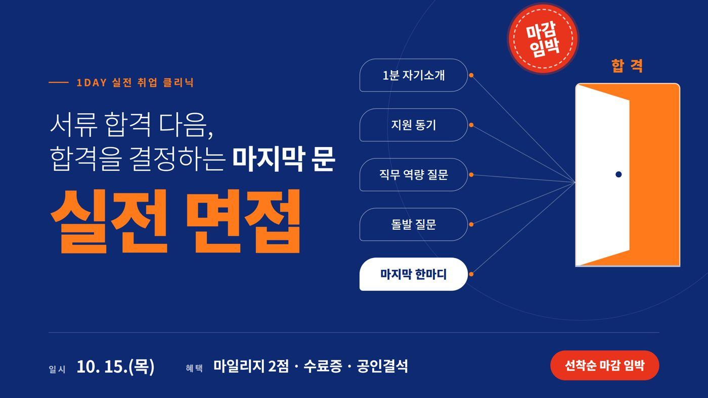
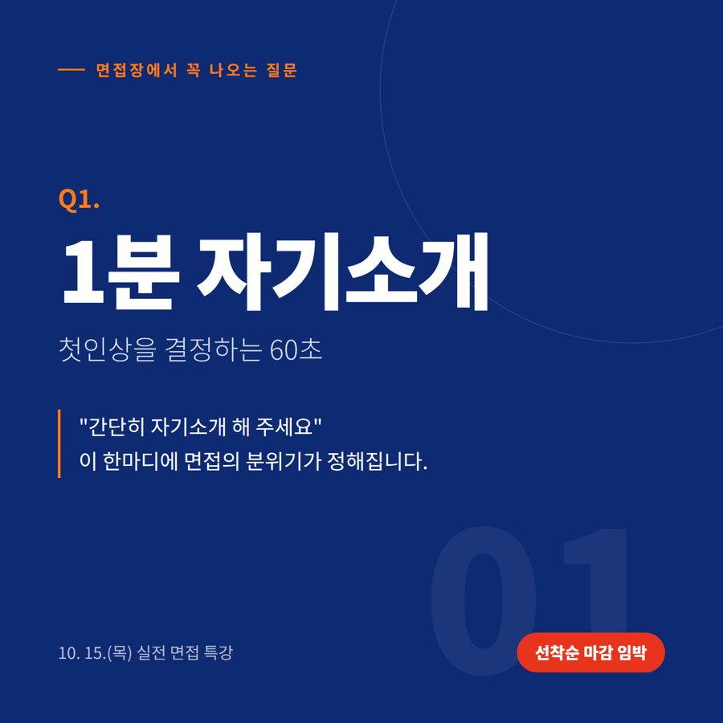
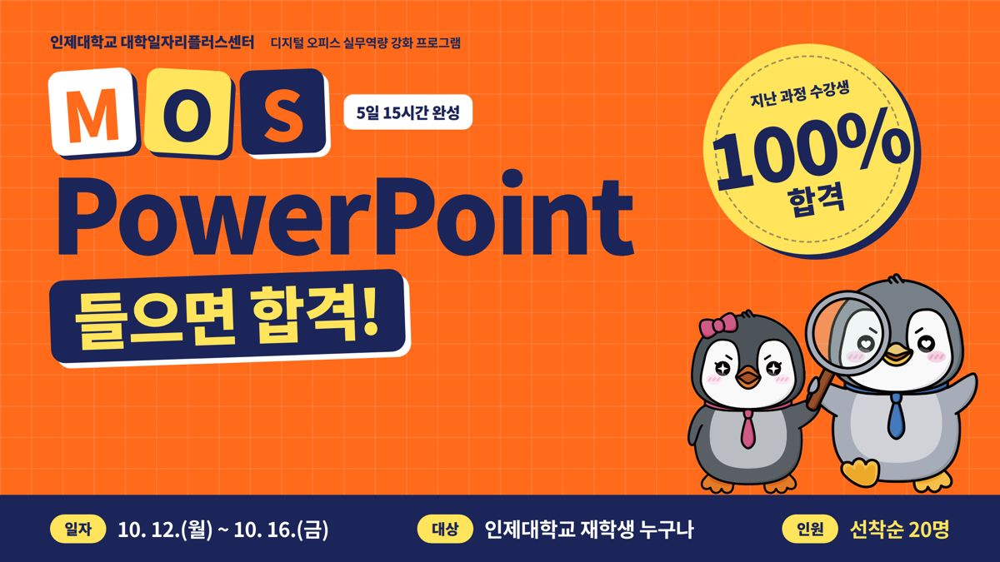
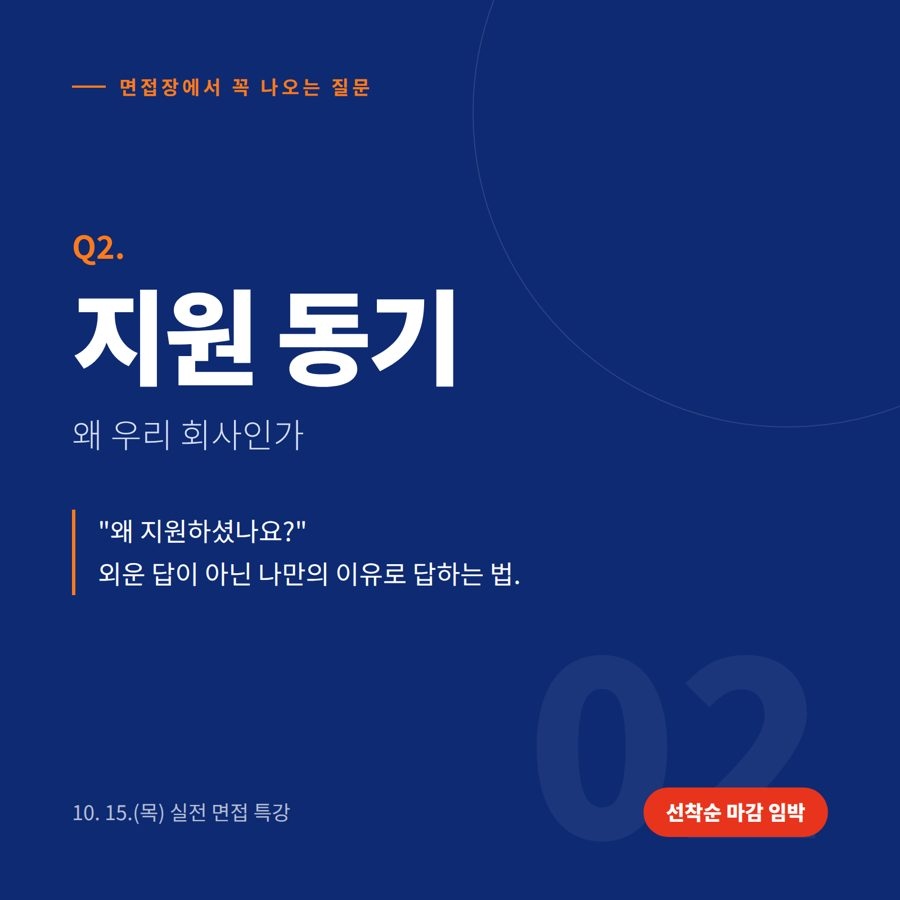
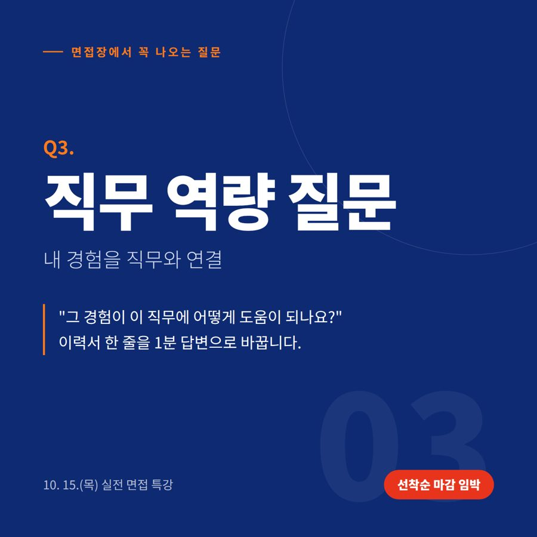
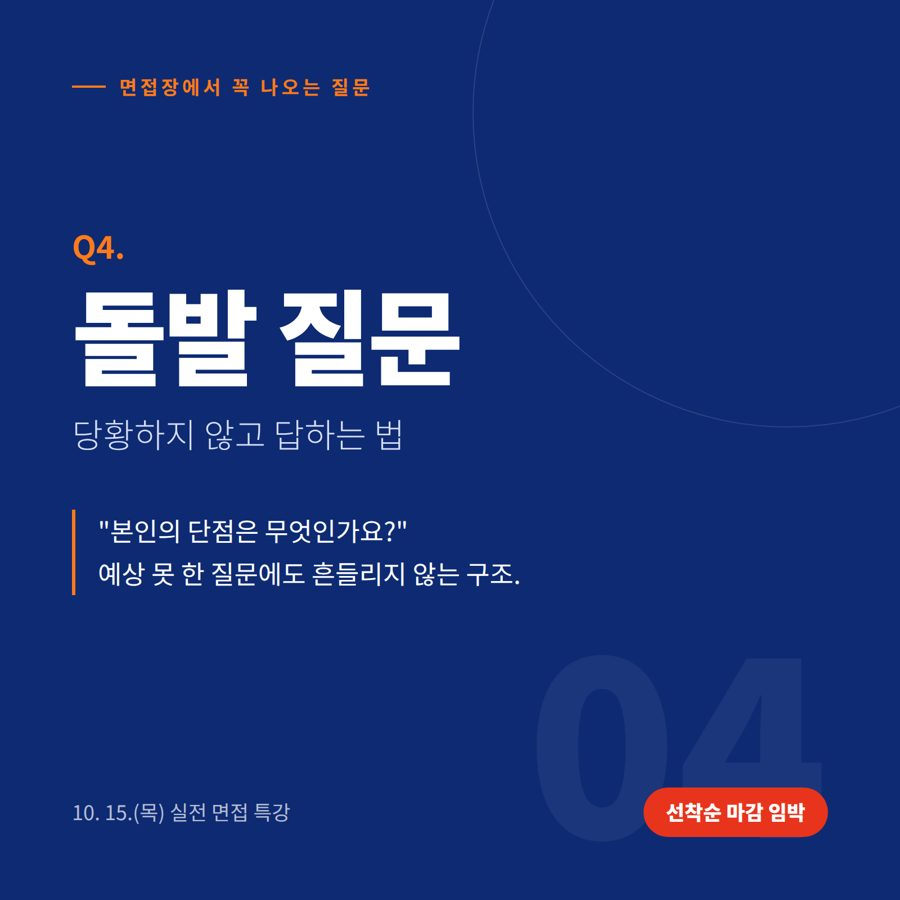
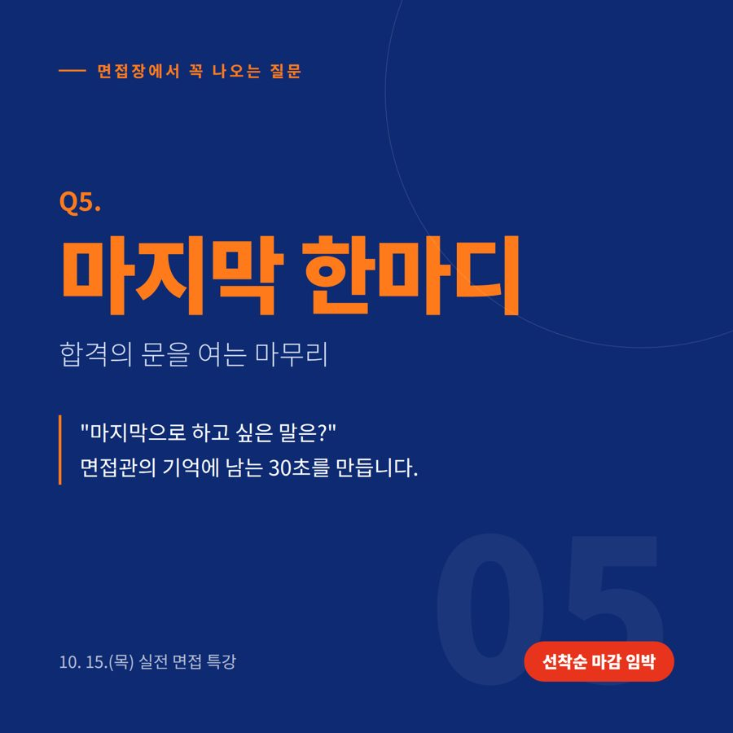
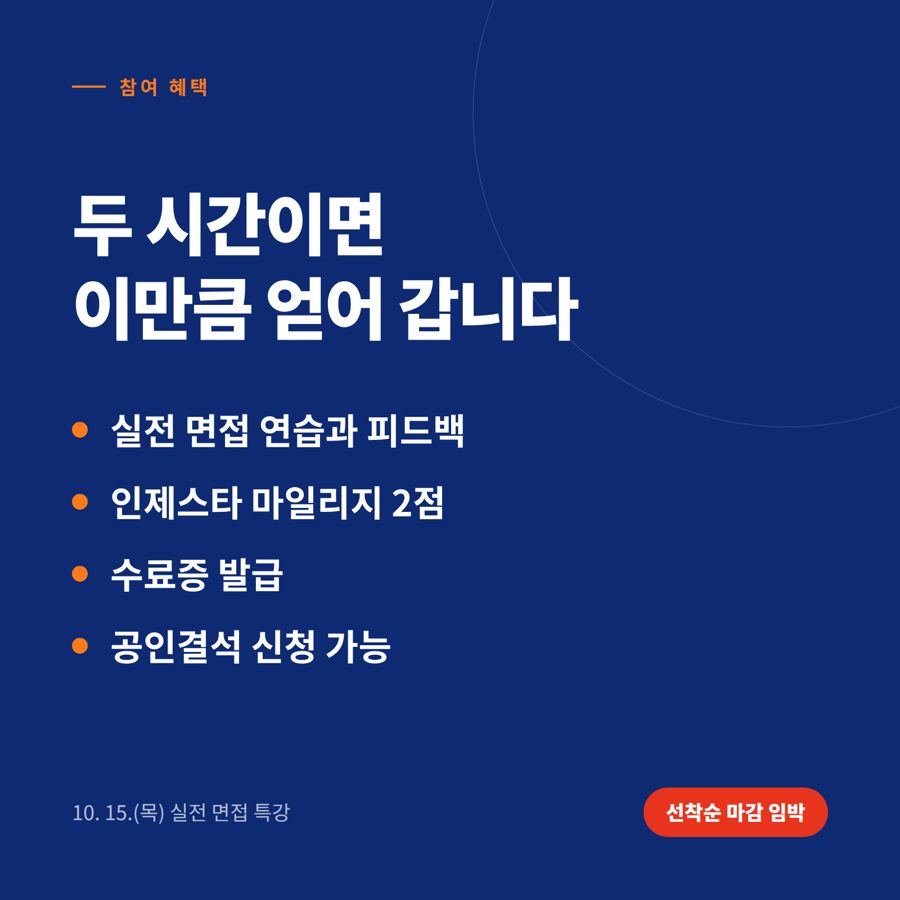

🚨 두 과정 모두 마감 임박 · 선착순 접수 중

MOS PowerPoint 개강D-?
면접 특강 접수 마감--:--:--
실전 면접 특강D-?
솔직하게 답해 보세요
Q1. 너 1분 자기소개,
지금 바로 할 자신 있어?
Q2. 조별과제 PPT 빌런
안 될 자신 있어?
둘 중 하나라도 "음…" 했다면, 이번 주가 기회입니다.
자기소개는 실전 면접 특강에서, PPT는 MOS PowerPoint에서 해결하세요.
이번 주 두 과정
자격증으로 서류를 통과하고,
면접으로 합격을 완성하세요

🎤 1day 실전 취업 클리닉
실전 면접 특강
| 일시 | 2026. 10. 15.(목) 13:00~15:00 |
| 장소 | E동 228호 (대면 강의·실습) |
| 인원 | 20명 소수정예 선착순 |
| 대상 | 재학생·졸업생·지역청년 |
| 혜택 | 마일리지 2점 · 수료증 · 공인결석 |
| 마감 | 10. 14.(수) 23:00 |

📊 디지털 오피스 실무역량 · 수강료 무료
MOS PowerPoint 자격증 과정
| 일정 | 10. 12.(월) ~ 10. 16.(금) |
| 시간 | 매일 18:00~21:00 (5일 15시간) |
| 인원 | 20명 선착순 |
| 대상 | 인제대학교 재학생 누구나 |
| 실적 | 지난 과정 수강생 100% 합격 |
| 잔여 | 남은 자리 얼마 없음 |
20초 만에 보는 면접 꿀팁
탭 한 번, 20초면
면접이 달라집니다
01
학벌·스펙이 아니다, 면접관이 진짜 보는 것29년 차 대기업 임원이 말하는 면접의 기준출처: 장동철 작가 인터뷰 영상
02
면접 전 꼭 준비할 키워드 2개어떤 질문에도 흔들리지 않는 답변의 뼈대출처: AND 유튜브 채널
03
면접관 앞에서 떨지 않는 법잘 보이려 할수록 긴장되는 이유출처: tvN 유 퀴즈 온 더 블럭 EP.269
04
공공기관 면접, 인사담당자가 말한다19년 차 공기업 인사담당자의 현장 강연 중에서출처: 2020 공공기관 채용정보 박람회
영상으로 감을 잡았다면, 이제 직접 말해 볼 차례입니다.
보는 것과 말해 보는 것은 다릅니다. 직접 답하고 피드백받는 연습은 특강에서만 가능합니다.
AI 시대의 면접
GPT도 제미나이도
대신해 줄 수 없는 것
자기소개서는 GPT가 써 주고, 예상 질문은 제미나이가 뽑아 줍니다.
그런데 면접장 문을 열고 들어가는 순간, AI는 따라 들어갈 수 없습니다.
모두가 AI로 같은 답을 준비할 때,
직접 말해 보고 피드백받은 사람만 면접장에서 달라 보입니다.
이런 학생이라면
하나라도 해당되면,
지금이 신청할 때입니다
- 서류는 붙었는데 면접은 한 번도 보지 못한 학생
- "1분 자기소개 해 주세요"에 자신 있게 답할 수 없는 학생
- 사람 앞에서 말할 때 긴장해서 머릿속이 하얘지는 학생
- 인턴십·서포터즈·현장실습·해외연수 선발 면접을 앞둔 학생
- 이력서 자격증 칸이 비어 있는 학생
- 팀플·과제 발표 자료를 매번 밤새워 만드는 학생
✅ 위 4개는 면접 특강, 아래 2개는 MOS PowerPoint가 답입니다.
면접장에서 꼭 나오는 질문
다섯 가지 질문,
미리 연습합니다




옆으로 넘겨 보세요 →
면접 특강 세부 일정
단 2시간,
실제처럼 말해 보고 바로 피드백
13:00~14:00
면접 기초 & 이미지메이킹면접의 이해, 호감도 높은 이미지 연출법
면접관의 시선을 사로잡는 기본 자세 실습
강의 및 실습
14:00~15:00
면접 유형 & 답변 피드백최신 면접 유형별 특징 분석 및 대응 전략
개인/그룹별 실전 답변 피드백
실전 클리닉
MOS PowerPoint 과정
컴퓨터를 잘 못해도,
5일이면 자격증
STEP 1기본 환경 익히기
STEP 2기능별 실습
STEP 3기출문제 풀이
STEP 4실전 모의테스트
정규 수업이 끝난 저녁 18:00~21:00에 운영해 수업과 겹치지 않습니다. 지난 MOS 과정은 모집 즉시 마감됐고, 수강생 전원이 합격했습니다.
👉 MOS PowerPoint 신청하기
신청 후 포기하면 패널티가 있으니, 끝까지 들을 수 있는 분만 신청해 주세요.
면접 특강 참여 혜택
듣기만 해도
남는 것이 있습니다

| 수료 조건 | 사전 역량진단(강의 전) + 사후 역량진단·만족도 조사(강의 후) 모두 참여 시 수료증 발급 |
| 공인결석 | 교육 시간(13:00~15:00) 공인결석이 필요하면 당일 출석부 '비고'란에 '공인결석 필요' 기재 |
신청 방법
신청은 1분이면 끝
💬 방법 ② 문자 간편 접수 (면접 특강)
"참가 희망(면접), 성함, 학번"을 보내 주세요.
010-7203-7677
모집 마감 10. 14.(수) 23:00
신청 유의사항
- 소수정예 밀착 피드백 과정이라, 신청 후 무단 불참(노쇼) 시 향후 비교과 프로그램 참여가 제한될 수 있습니다.
- 부득이하게 참석이 어려우면 최소 1일 전까지 취소하고 담당자에게 연락해 주세요.
이어서 들을 수 있는 MOS 과정
PowerPoint 다음은
Word로 이어 가세요
📝 MOS Word
11. 2.(월) ~ 11. 6.(금) · 무료
잔여 소수
신청하기 →
🔒 MOS Excel
11. 9.(월) ~ 11. 13.(금)
선착순 마감
자주 묻는 질문
궁금한 점이 있다면
면접 경험이 전혀 없어도 들을 수 있나요?
물론입니다. 면접이 처음인 학생일수록 얻어 가는 것이 더 많습니다.
MOS는 컴퓨터를 잘 못해도 들을 수 있나요?
네. 기본 환경부터 기출문제와 실전 모의테스트까지 5일 동안 단계별로 진행합니다.
미리 준비해 올 것이 있나요?
면접 특강에는 작성해 둔 이력서나 자기소개서가 있다면 가져오세요. 내 서류를 바탕으로 답변을 연습하면 훨씬 실전적입니다. 없어도 괜찮습니다.
수업과 겹치면 어떻게 하나요?
면접 특강은 공인결석을 신청할 수 있습니다(당일 출석부 비고란에 '공인결석 필요' 작성). MOS는 정규 수업이 끝난 저녁 시간에 운영됩니다.
두 과정을 모두 신청해도 되나요?
네. 면접 특강(10.15. 낮)과 MOS PowerPoint(10.12.~16. 저녁)는 시간이 겹치지 않아 함께 들을 수 있습니다. 각각 따로 신청해 주세요.
신청했는데 못 가게 되면요?
불참 시 비교과프로그램 참여가 제한될 수 있습니다. 부득이한 경우 1일 전까지 대학일자리플러스센터로 연락 주세요.
서류에 붙고 면접에서 떨어지면
처음으로 돌아갑니다
두 과정 모두 선착순 마감입니다. 자리가 남아 있을 때 지금 신청하세요.